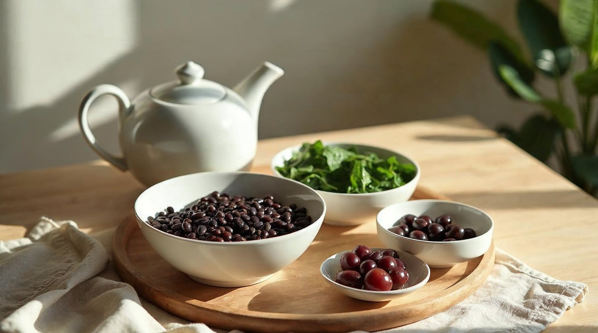

이종호 한의사 감수좋은꿈참사랑한의원 대표원장 (한의사 면허번호 19769)발행 2026-11-26 · 수정 2026-11-26
이 글의 차례
진찰을 마치고 "혈이 조금 부족한 모습이 보여요. 한의학에서는 혈허라고 부릅니다"라고 말씀드리면, 많은 분이 곧바로 이렇게 물으십니다. "그럼 제가 빈혈이라는 건가요? 피 검사를 해야 하나요?" 걱정 섞인 목소리에 저도 설명을 서두르게 됩니다.
혈허라는 말에는 피를 뜻하는 혈이 들어 있으니 빈혈과 같은 말로 들리는 것이 자연스럽습니다. 실제로 두 말이 가리키는 모습이 겹치는 경우도 있습니다. 하지만 둘은 출발점이 다른 말이어서, 같은 것으로 여기시면 오히려 헷갈리실 수 있습니다.
먼저 분명히 말씀드리겠습니다. 혈허는 병명이 아닙니다. 혈액 검사의 수치로 정하는 진단명도 아닙니다. 한의학에서 오랫동안 몸의 상태를 묘사할 때 써 온 전통적인 표현이고, 진찰에서 본 여러 모습을 한 단어로 묶어 설명하는 말입니다.
이 글에서는 혈허라는 말이 어떤 몸의 모습을 가리키는지, 빈혈과는 어떻게 다른지, 진료실에서 무엇을 보고 이 말을 쓰는지, 그리고 생활에서 무엇을 챙기면 좋은지를 차례로 풀어 보겠습니다.
혈허는 어떤 몸 상태를 말하나요?
한의학에서 혈은 몸 구석구석을 적시고 기르는 것을 아울러 부르는 말입니다. 눈이 잘 보이고, 피부와 머리카락이 윤기 있고, 손발이 저리지 않고, 잠이 편안한 것을 모두 혈이 제 역할을 하는 모습으로 설명해 왔습니다.
혈허는 이 적시고 기르는 힘이 모자란 모습을 말합니다. 눈이 쉽게 침침해지고, 앉았다 일어설 때 핑 돌고, 피부가 건조하고 머리카락이 잘 빠지며, 손발이 자주 저리고, 잠이 얕고 꿈이 많은 모습을 함께 떠올리시면 가깝습니다.
이 말은 사람에게 붙이는 딱지가 아닙니다. 생리량이 많았던 몇 달, 출산 뒤, 무리한 다이어트를 한 시기처럼 특정한 때에 혈허에 가까운 모습이 짙어졌다가, 식사와 잠이 돌아오면 옅어지기도 합니다. 지금 이 시기의 몸을 묘사하는 말로 이해해 주시면 됩니다.
혈허와 빈혈은 어떻게 다른가요?
빈혈은 혈액 검사에서 혈색소 수치가 기준보다 낮을 때 붙는 진단입니다. 숫자로 확인하는 개념이고, 원인에 따라 철분이 모자라서인지, 다른 이유가 있는지를 병원에서 따로 살핍니다.
혈허는 숫자가 아니라 진찰에서 보이는 모습을 묶은 말입니다. 그래서 혈액 검사는 정상인데 어지럼, 눈의 피로, 손발 저림, 피부 건조가 겹쳐 혈허라는 설명을 듣는 분도 계시고, 반대로 빈혈 수치가 있는데 다른 모습이 더 두드러져 다른 말로 설명하는 경우도 있습니다.
그래서 저는 두 말을 서로 대신하지 않고 나란히 봅니다. 빈혈이 의심되면 병원 검사가 먼저이고, 철분 같은 보충이 필요한지는 그 결과로 정합니다. 혈허라는 설명은 그 위에서 생활과 몸의 흐름을 함께 살피는 데 씁니다.
왜 혈허 같은 상태가 생긴다고 보나요
한의학에서는 혈이 음식에서 만들어지고, 잠을 자는 동안 채워지며, 출혈이나 오랜 긴장으로 소모된다고 설명해 왔습니다. 만드는 쪽이 약하거나 쓰는 쪽이 많으면 모자란 쪽으로 기운다고 봅니다.
생활에서 흔히 보는 이유는 이렇습니다.
- 생리량이 많거나 생리 기간이 길게 이어지는 경우
- 출산이나 수술처럼 피를 많이 잃은 뒤의 회복기
- 끼니를 거르거나 고기·달걀·채소를 거의 먹지 않는 식사
- 무리한 다이어트나 편식이 오래 이어진 경우
- 밤늦게까지 깨어 있고 잠이 짧은 생활
- 눈을 오래 쓰는 일과 긴장이 겹친 생활
눈을 많이 쓰는 것이 왜 들어가는지 궁금해하시는 분이 많습니다. 한의학에서는 오래 보는 일이 혈을 쓴다고 설명해 왔습니다. 화면을 하루 종일 보는 분들이 눈의 피로와 함께 어지럼, 잠의 얕음을 함께 말씀하시는 모습이 이 설명과 맞닿아 있습니다.
현대 의학으로 보면 이런 모습 뒤에 철 결핍, 갑상선 문제, 생리량을 늘리는 자궁의 변화, 위장에서 피가 새는 일 같은 이유가 숨어 있을 수 있습니다. 그래서 혈허라는 설명을 드리더라도 필요하면 병원 검사를 함께 권해 드립니다.
계절과 나이도 영향을 줍니다. 건조한 가을과 겨울에는 피부와 눈의 건조함이 더 두드러져 혈허에 가까운 모습이 짙어 보이기도 하고, 나이가 들면서 입맛과 소화가 줄면 만드는 쪽이 약해지기도 합니다. 그래서 같은 분도 시기에 따라 설명이 달라질 수 있습니다.
진맥·설진·문진에서는 무엇을 함께 보나요
진맥에서는 맥의 굵기와 힘을 봅니다. 혈허에 가까운 분은 손끝에 실처럼 가늘게 잡히는 맥을 보이는 경우가 많습니다. 다만 맥은 긴장, 추위, 카페인에도 달라지기 때문에 맥 하나로 정하지 않습니다.
설진에서는 혀의 색을 주로 봅니다. 혀가 엷은 분홍빛이나 하얀빛에 가깝고 몸집이 작고 얇은 모습을 혈허와 연결해 설명해 왔습니다. 입술과 손톱의 빛깔, 눈 아래 결막이 창백한지도 함께 살핍니다.
문진에서는 어지럼이 언제 오는지, 눈이 쉽게 침침한지, 손발이 저리는지, 머리카락이 많이 빠지는지, 잠들기 어렵거나 꿈이 많은지, 생리의 양과 색, 주기는 어떤지를 여쭙습니다. 이런 대답이 맥과 혀의 모습과 같은 쪽을 가리킬 때 혈허라는 설명을 조심스럽게 붙입니다.
세 가지는 서로를 확인하는 장치입니다. 혀가 엷어 보여도 생활에서 어지럼이나 저림이 전혀 없다면 혈허라고 말씀드리지 않습니다. 반대로 맥과 혀는 뚜렷하지 않아도 생활에서 이런 모습이 이어지면 그 이유를 다른 쪽에서 더 찾아봅니다.
생활에서 흔히 느끼는 모습
혈허라는 설명을 들으시는 분들이 흔히 말씀하시는 모습은 이렇습니다. 몇 가지가 겹쳐 오래 이어지는지가 중요합니다.
- 앉았다 일어설 때 눈앞이 핑 돈다
- 눈이 쉽게 침침하고 뻑뻑하다
- 손발이 자주 저리고 쥐가 잘 난다
- 피부가 건조하고 손톱이 잘 갈라진다
- 머리를 감을 때 빠지는 머리카락이 늘었다
- 잠이 얕고 꿈을 많이 꾼다
여성분들은 생리가 끝난 직후에 이런 모습이 더 짙어진다고 말씀하시는 경우가 많습니다. 생리 뒤 며칠 동안 어지럽고 처진다면 그 시기를 기록해 두시면 상담에 도움이 됩니다.
이런 모습은 하루 이틀 잠을 설친 뒤의 피곤과는 결이 다릅니다. 푹 잔 날에도 눈이 침침하고, 계절이 바뀌어도 피부 건조와 저림이 이어진다면 몸이 오래 모자란 쪽으로 기울어 있는 것일 수 있습니다.
비슷해 보이지만 다르게 살피는 것
어지럼이 있다고 모두 혈허로 보지 않습니다. 고개를 돌릴 때 빙글빙글 도는 어지럼은 귀의 평형 기관 쪽 문제일 수 있고, 일어설 때마다 눈앞이 캄캄해지면 혈압이 낮은 것인지도 함께 봅니다.
손발 저림도 마찬가지입니다. 한쪽 손가락만 밤에 저리면 손목 신경이 눌린 것일 수 있고, 목을 움직일 때 팔까지 저리면 목 쪽을 먼저 살핍니다. 양쪽 손발이 고르게 저리고 다른 혈허의 모습이 함께 있을 때 이 설명을 씁니다.
기허와도 자주 함께 이야기합니다. 숨참과 땀, 무기력이 앞에 서면 기허 쪽, 어지럼과 건조함, 저림이 앞에 서면 혈허 쪽 설명을 씁니다. 실제로는 둘이 함께 있는 경우가 흔해서 어느 쪽이 더 두드러지는지를 봅니다.
스스로 점검해 볼 것
집에서 내 몸을 돌아보는 질문입니다. 진료실에서 이야기할 거리를 모은다고 생각해 주세요.
- 앉았다 일어설 때 핑 도는 일이 일주일에 몇 번 있나요?
- 생리할 때 패드를 얼마나 자주 갈고, 기간은 며칠인가요?
- 하루 식사에서 고기, 생선, 달걀, 콩, 푸른 채소가 얼마나 들어가나요?
- 잠드는 시각은 대개 몇 시인가요?
- 최근 1년 안에 혈액 검사를 받은 적이 있나요?
질문에 답하다 보면 혈이 새는 자리와 채워지지 않는 자리가 보이기 시작합니다. 생리량이 문제인지, 식사가 문제인지, 늦은 잠이 문제인지에 따라 생활에서 먼저 손볼 곳이 달라집니다. 생리량이 예전보다 눈에 띄게 늘었다면 그것만으로도 산부인과 진료를 받아 볼 이유가 됩니다.
먼저 이렇게 여쭙니다
- 어지럼은 언제, 어떤 자세에서 생기나요?
- 눈의 피로, 손발 저림, 머리카락 빠짐 가운데 무엇이 가장 불편한가요?
- 생리의 양과 주기, 생리 뒤 컨디션은 어떤가요?
- 식사 내용과 다이어트 여부는 어떤가요?
- 드시는 약이나 철분제, 영양제가 있나요?
- 임신 중이거나 가능성이 있나요? 출산이나 수술을 최근에 하셨나요?
혈액 검사 결과지가 있으면 혈색소와 철분 관련 수치를 함께 봅니다. 결과가 없고 창백함이나 숨참이 뚜렷하다면 병원 검사를 먼저 권해 드립니다.

일상에서 먼저 해 볼 수 있는 것
혈을 채우는 일은 잘 먹고 잘 자는 일에서 시작합니다. 아래 가운데 지금 가장 쉬운 하나부터 골라 보세요.
- 끼니마다 고기, 생선, 달걀, 두부 가운데 한 가지 곁들이기
- 시금치, 브로콜리 같은 푸른 채소를 하루 한 접시 먹기
- 식사 직후 진한 차나 커피는 조금 시간을 두고 마시기
- 밤 12시 전에 잠자리에 들기
- 화면을 50분 보면 10분은 먼 곳을 보며 눈 쉬기
- 앉았다 일어설 때 잠시 걸터앉아 숨을 고르기
식사는 한 가지 음식에 기대기보다 골고루가 먼저입니다. 철분이 많은 음식도 소화가 약하면 잘 쓰이지 못하니, 천천히 꼭꼭 씹어 드시고 과식은 피하세요. 철분제를 드시는 중이라면 병원 안내대로 이어 가시면 됩니다.
잠은 혈허를 이야기할 때 가장 자주 말씀드리는 부분입니다. 늦게 자고 일찍 일어나는 생활이 오래되면 어지럼과 눈의 피로가 잘 가시지 않는 분이 많습니다. 일주일만 잠드는 시각을 30분 앞당겨 보세요.
다이어트 중이라면 굶는 방식보다 양을 조금 줄이고 단백질과 채소를 지키는 방식이 좋습니다. 체중은 천천히 줄어도 어지럼과 머리카락 빠짐이 덜한 쪽이 오래갑니다.
한의원에서 함께 살필 수 있는 경우
- 검사는 괜찮다는데 어지럼과 눈의 피로, 손발 저림이 이어지는 경우
- 출산이나 수술 뒤 회복이 더디고 쉽게 처지는 경우
- 생리 뒤마다 어지럽고 잠이 얕아지는 경우
- 다이어트 뒤 머리카락이 빠지고 피부가 건조해진 경우
좋은꿈참사랑한의원에서는 진맥과 설진, 문진을 마친 뒤 지금의 모습을 쉬운 말로 먼저 설명드립니다. 혈허라는 말을 쓰더라도 그것이 어지럼인지, 저림인지, 잠인지 어떤 생활의 모습과 이어지는지를 함께 말씀드립니다.
진찰한 내용에 따라 침, 온열 관리, 한약 상담 가운데 지금 상태에 맞는 것을 정합니다. 한약을 상의할 때는 드시는 약과 철분제, 영양제를 모두 확인하고 신중하게 정합니다. 임신 중이거나 가능성이 있다면 먼저 알려 주시고 산부인과 선생님과도 상의해 주세요.
생리량이 많아 걱정되시면 산부인과 진료를 함께 받아 보시길 권합니다. 병원에서 처방받은 약은 상의 없이 멈추지 않으시고, 한의원 진료는 그 곁에서 생활과 몸의 흐름을 함께 살핀다고 생각해 주세요.
이렇게 기록해 오시면 상담이 쉬워집니다
- 어지럼이 생긴 날과 그때의 자세
- 생리 시작일과 끝난 날, 양이 많았던 날
- 잠든 시각과 깬 시각, 꿈이 많았던 날
- 하루 식사 내용을 대략 적은 메모
- 눈의 피로나 손발 저림이 심했던 상황
한 달 정도 적어 보시면 생리 주기와 잠, 식사가 어지럼과 어떻게 엮여 있는지 보이기 시작합니다. 그 흐름이 생활에서 무엇부터 바꿀지 정하는 실마리가 됩니다.
혈허라는 말을 들으셨다면
혈허는 몸이 '조금 더 채워 달라'고 보내는 신호를 한의학의 말로 옮긴 것이라고 생각해 주세요. 무서운 병명이 아니라, 식사와 잠, 쓰는 것과 채우는 것의 균형을 돌아보자는 제안입니다.
이번 주에는 끼니마다 단백질 반찬 한 가지, 30분 일찍 잠들기 가운데 하나만 골라 보세요. 다음에 오시면 맥과 혀를 다시 보면서 그 사이 몸이 어떻게 움직였는지 함께 살펴보겠습니다.
가족과 함께 오셔서 같은 설명을 들으시면 집에서 식사를 바꾸기가 훨씬 수월합니다. 반찬 한 가지, 잠드는 시각 하나도 혼자보다 가족이 함께 맞출 때 오래갑니다.
이런 증상은 먼저 확인이 필요합니다
- 검은 변이나 피를 토하는 일이 있거나, 얼굴이 창백해지며 쓰러질 것 같은 경우
- 생리 양이 갑자기 크게 늘어 한 시간마다 패드를 갈 정도이고 심하게 어지러운 경우
이런 신호가 있으면 한의원보다 가까운 병원이나 응급실을 먼저 찾으세요.
함께 읽으면 좋은 글
- 빈혈이 있다는 말을 듣고 어지럽고 쉽게 지칠 때, 철분과 생활은 어떻게 살피나요?
- 피곤함이 오래가면 혈액검사가 필요한가요?
- 큰 스트레스나 몸살 뒤 몇 달 지나 머리카락이 한 움큼씩 빠질 때는 어떻게 살피나요?
- 한의원에서 혀를 보는 설진은 무엇을 살피는 검사인가요?
- 눈이 뻑뻑하고 모래가 들어간 듯 따갑거나 쉽게 피로한 안구건조증은 어떻게 살피나요?
여쭙는 것
- 어지럼은 언제, 어떤 자세에서 생기나요?
- 눈의 피로, 손발 저림, 머리카락 빠짐 가운데 무엇이 가장 불편한가요?
- 생리의 양과 주기, 생리 뒤 컨디션은 어떤가요?
생활에서 해 볼 것
- 끼니마다 고기, 생선, 달걀, 두부 가운데 한 가지 곁들이기
- 시금치, 브로콜리 같은 푸른 채소를 하루 한 접시 먹기
- 식사 직후 진한 차나 커피는 조금 시간을 두고 마시기
한의원에서 함께 살필 것
- 검사는 괜찮다는데 어지럼과 눈의 피로, 손발 저림이 이어지는 경우
- 출산이나 수술 뒤 회복이 더디고 쉽게 처지는 경우
- 생리 뒤마다 어지럽고 잠이 얕아지는 경우
먼저 확인이 필요한 신호
- 검은 변이나 피를 토하는 일이 있거나, 얼굴이 창백해지며 쓰러질 것 같은 경우
- 생리 양이 갑자기 크게 늘어 한 시간마다 패드를 갈 정도이고 심하게 어지러운 경우
한눈에 보는 표
| 구분 | 핵심 |
|---|---|
| 여쭙는 것 | 어지럼은 언제, 어떤 자세에서 생기나요? 눈의 피로, 손발 저림, 머리카락 빠짐 가운데 무엇이 가장 불편한가요? |
| 생활에서 해 볼 것 | 끼니마다 고기, 생선, 달걀, 두부 가운데 한 가지 곁들이기 시금치, 브로콜리 같은 푸른 채소를 하루 한 접시 먹기 |
| 한의원에서 함께 살필 것 | 검사는 괜찮다는데 어지럼과 눈의 피로, 손발 저림이 이어지는 경우 출산이나 수술 뒤 회복이 더디고 쉽게 처지는 경우 |
| 먼저 확인이 필요한 신호 | 검은 변이나 피를 토하는 일이 있거나, 얼굴이 창백해지며 쓰러질 것 같은 경우 생리 양이 갑자기 크게 늘어 한 시간마다 패드를 갈 정도이고 심하게 어지러운 경우 |
자주 묻는 질문
혈허라고 하면 빈혈이라는 뜻인가요?
같은 말은 아닙니다. 빈혈은 혈액 검사 수치로 정하는 진단이고, 혈허는 진찰에서 보이는 어지럼, 건조함, 저림 같은 모습을 한의학에서 전통적으로 묶어 부르는 말입니다. 빈혈이 의심되면 병원 검사를 먼저 권해 드립니다.
혈허라는 말을 들으면 철분제를 먹어야 하나요?
철분제가 필요한지는 혈액 검사 결과를 보고 병원에서 정하는 것이 좋습니다. 수치가 정상이라면 식사와 잠을 먼저 살피고, 이미 처방받은 철분제가 있다면 안내대로 이어 가시면 됩니다.
남성도 혈허라는 말을 듣나요?
네, 들으실 수 있습니다. 생리와 상관없이 오랜 과로, 짧은 잠, 고르지 않은 식사, 큰 병 뒤의 회복기에 어지럼과 눈의 피로, 저림이 겹치면 같은 설명을 쓰기도 합니다.
혈허는 한 번 생기면 계속 가나요?
정해진 체질이 아니라 시기에 따라 달라지는 상태로 봅니다. 식사와 잠, 생리 주기의 흐름이 돌아오면 그 모습이 옅어지는 경우가 많아서 시간을 두고 다시 살핍니다.
좋은꿈참사랑한의원은 재진 때 지난번 이야기부터 이어서 여쭙니다. 진료시간과 예약은 오시는 길에서 확인하세요.
어디서 상담받을 수 있나요?
좋은꿈참사랑한의원은 서울 동작구 만양로2길 2 신성빌딩 3층·5층(서울 동작구 상도동, 7호선 상도역 3번 출구 근처)에 있습니다. 한의사 3명(이종호 대표원장, 조영기 수석진료원장, 정원영 진료원장)이 진료합니다. 진료시간은 평일 09:30~20:00(점심 13:00~14:00), 토·일·공휴일 09:30~15:00이며, 방문 전 전화로 확인을 권합니다. 예약은 네이버 예약, 카카오톡 상담, 전화 02-815-7510로 받습니다.
이 글은 일반적인 건강 정보이며 개인의 진단이나 치료를 대신하지 않습니다. 증상이 있거나 복용 중인 약이 있다면 진료를 통해 확인하세요. 치료 효과는 개인마다 다를 수 있습니다.
작성 기준: 일반적으로 알려져 있는 건강 정보를 참고해 정리했습니다(대표원장 감수). 증상 기록은 1~2주 동안 하루 1회, 비슷한 시간에 적어 오시면 지난 상태와 비교하기 쉽습니다.